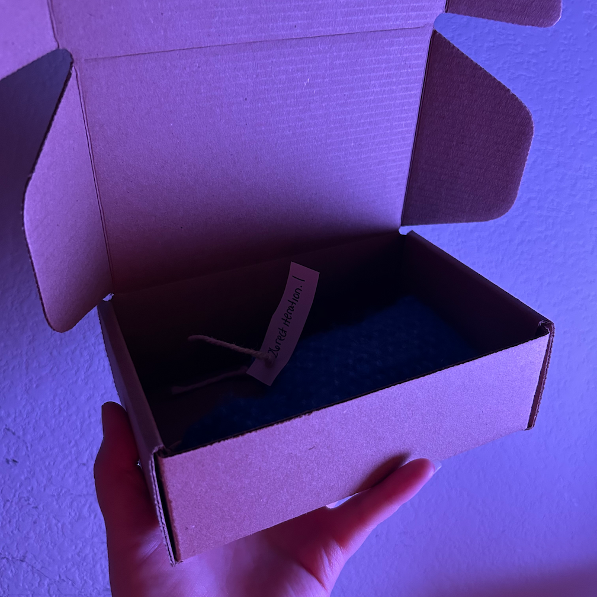

silicon’s 1st experience hand-knitting dates back to 2020, a course @ Parsons New School of Design taken during senior year. intrigue never dissipated. Initially trained as a communication designer (holds a BFA in communication design & AFA in graphic design + fine arts).
vesica = musical identtiy of silicon venus
a couple of years experimenting \ remixing ai sounds \ songwriting
webdesign by silicon venus
coded by venus silicon
Handmade Statement
Each piece is time—consumingly handcrafted with hyperfixated attention. While we guarantee superb quality, slight imperfections may arise. These delicate irregularities are proof of the handmade touch in venusilicon creations.
FAQ—Handmade Products
Cancel
Cancellation can occur in-between a 72 hour period after placing your order, just do so by sending me a dm or text.
Refunds
Due to the unique nature of these goods, we do not offer refunds.
Warranty
We stand by the quality of our work and are pleased to provide a warranty for up to 6 months from the date of purchase. This warranty covers repairs for defects in materials or craftsmanship at no additional cost but does not include normal wear and tear, damage caused by misuse, or alterations made by the customer. If you experience an issue within the warranty period, please send me a dm or text with your order, a description of the problem, and photos if applicable. If the issue qualifies under the warranty, we will provide instructions on how to send the item for repair. Please note that shipping costs are the responsibility of the customer.
Accepted Payment Methods
We accept payments via Stripe payment links + ApplePay.
International Orders
We currently do not offer shipping outside the United States. We hope to expand internationally in the future.
Domestic Orders
All orders within the United States ship free of charge (USPS Ground Advantage®). We’re committed to making your shopping experience as seamless as possible. If you need expedited shipping, feel free to reach out, and we'll accommodate your request but please note that any additional shipping costs are the responsibility of the customer.
Processing Time
Handmade products are ready for shipment.

Ships within 1-2 weeks.